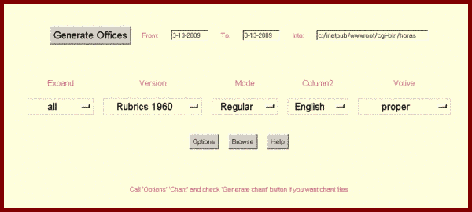

HTML generation getting started
This page describes the HTML generator version of Divinum Officium programlet
Click here to download the latest version with the databases.
The downloaded file will be unzipped creating Hofficium folder, with officium.exe program
Hhoras.ini file points to horas subfolder contaning the databases (text files editable
by any text processor producing ASCII text files). officiumprog folder contains the full
set of the simbol files, either to this and the other versions.
Click here for some known problems and deficiences.
BR>
Click here for the list of missing offices.
Please help.
The programlet may be started by
- Hofficium.exe program using Windows operation system
- Hofficium.pl in windows system if perl 5.8x is installed, for chant variation
- LHofficium.pl in non windows systems, if perl 5.8x with Tk implement is installed
The chant refences are omitted from this version.
This version could be converted to exacutable by approriate program compatible
with t he give system
The programlet generates plain html files, into the
$outdir/$year/$month-$day
folder system, 8 files fo each folder
The programlet comes up with the page:

- Click on the option widgets to select the appropriate variations for the generated files,
- click on Options button to select some options and colors etc also for the generated files,
and after clicking Chant tab to decide wether you want wav files for the
psalms and for some hymns or not
- enter the from and to inclusive dates and the into output folder
for the generated files
- and finally click Generate offices button to perform the generation.
Maximum 366 folders may be generated at one time, the programlet could generate more than one year folders.
Browse command call windows explorer to be able to browse the generated files.
Hints:
- You may select single language output by selecting the same language either as language
for the second column and in Option dialog table as language for the first column.
- Set full white backround by setting framecolor to 'white', checking whitebackground
box and setting border = 0;
T.A.D.M.N.
|